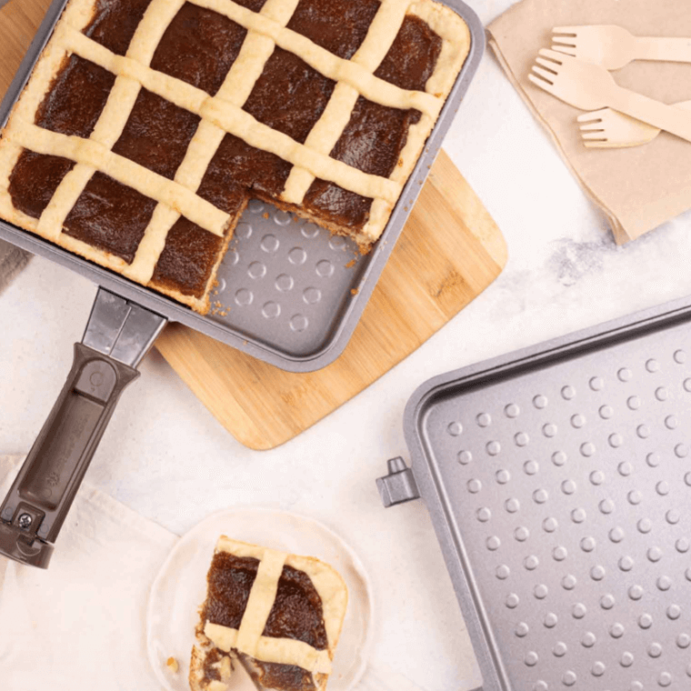
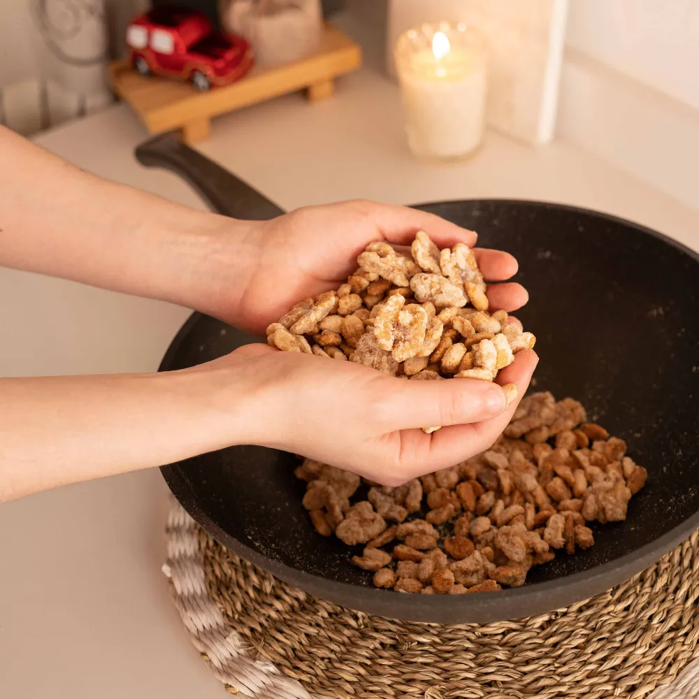

Pastafrola
Ingredientes
- Para la Masa
- 200 gr. harina 0000
- 100 gr. manteca fría cortada en cubitos
- 100 gr. azúcar impalpable
- 1 un. limón (ralladura)
- 1⁄2 cdita. sal
- 1 cdita. polvo hornear
- 1 un. huevo
- 1 cda. esencia vainilla
- 2 g. (1/2 cdta) de sal
- Azúcar impalpable
- Para rellenar:
- 500 gr. dulce de membrillo
Preparación
Hacemos un arenado en un bowl usando la punta de los dedos con la manteca fría, el azúcar impalpable, la harina, el polvo de hornear, la ralladura y la sal. Luego agregamos el huevo y la esencia y sin amasar mucho formamos una masa que dejamos descansar 30’ en la heladera.
Una vez fría la estiramos y forramos la base y los lados de la Flip (previamente enmantecada) reservando una parte para hacer las tiras.
Pisamos el dulce de membrillo con un tenedor y rellenamos. Luego vamos a estirar la masa restante para hacer las tiras que van por encima del dulce. Cocinamos 30’ a fuego corona.
Retiramos, desmoldamos y cortamos en cuadrados.
Torta de ciruelas

Ingredientes
- Para las frutas caramelizadas
- 50 g. de manteca
- 14 g. (1 cucharada) de azúcar o miel
- 9-10 und. ciruelas pequeñas cortadas
- Para la Masa
- 200 g. yogur
- 70 g. de aceite de oliva
- 200 g. de azúcar mascabo, integral o rubia
- 2 cdas. de licor de fruta (se puede usar ron, brandi o sustituirlo por ralladura de limón)
- 2 und. huevos grandes
- 350 g. de harina leudante
- 1 1⁄2 cdtas. de polvo de hornear
- 2 g. (1/2 cdta) de sal
- Azúcar impalpable
Preparación
Introducimos la manteca, azúcar, miel y ciruela en la bífera y caramelizamos. En la sartén ubicamos los frutos secos y tostamos a fuego corona y reservamos.
En un bowl grande, combinamos, el yogurt, el aceite, el azúcar, y el licor juntos. Añadimos los huevos, batimos bien, añadimos la harina tamizada, polvo de hornear y mezclamos.
Distribuimos manteca en la cacerola, vertemos la mezcla y distribuimos la fruta reservada. Tapamos y cocinamos a FUEGO CORONA hasta finalizar la cocción. Insertamos un palillo en el centro y sale limpio ya está.
Espolvorear el azúcar impalpable.
Cupcakes de naranja

Ingredientes
Preparación
En un bol batimos la manteca con el azúcar hasta lograr una crema. Agregamos la cáscara rallada de naranja y los huevos.
Incorporamos la harina tamizada y mezclamos bien hasta lograr una preparación homogénea.
Colocamos una cucharada de mezcla en los pirotines (colocarlos de a dos, para evitar que la preparación se expanda durante la cocción). En el centro, distribuimos una cdta de dulce de leche. Cubrimos con más mezcla, sólo hasta la mitad del pirotín y los colocamos en el complemento. Insertamos un palillo en el centro y sale limpio ya está.
Calentamos la pieza tapada a fuego fuerte. Introducimos el complemento.
Tapamos y cocinamos a fuego medio hasta finalizar la cocción (20’ aprox.). Apagamos el fuego y dejamos en reposo 5’ en la Pizzera tapada.
Retiramos el complemento y dejamos enfriar.
Decoramos con un copete de merengue o crema chantilly.
Variante
Reemplazar el dulce de leche por chips de chocolate, nueces o cubitos de dulce de batata.
Alfajores sablé con Dulce de Leche

Ingredientes
- Alfajores
- 300 grs. de Harina 0000
- 200 grs. de Manteca
- 100 grs. de Azúcar impalpable
- 1 Unidad de Huevo
- Relleno
- 500 grs. de Dulce de leche repostero
- Extras
- Cantidad Necesaria de Azúcar impalpable
- Cantidad Necesaria de Chocolate negro para cobertura
Preparación
Cernir la harina y el azúcar impalpable en un bowl. Colocar la manteca en cubos bien fría en el centro y con la punta de los dedos ir desmenuzándola hasta obtener un arenado.
Agregar las almendras, mezclar y por último incorporar el huevo para formar una masa. Envolver en papel film y dejar reposar en la heladera durante 30 minutos.
Estirar la masa sobre una superficie enharinada y cortar con la ayuda de un cortante circular las tapitas de los alfajores.
Calentamos la pieza tapada a fuego fuerte. Introducimos el complemento.
Colocar las tapitas en la Fuente y llevar a fuego mínimo hasta que la masa esté dorada.
Untar las tapitas con el dulce de leche y formar el alfajor. Si se desea se pueden bañar en chocolate cobertura o espolvorear con azúcar impalpable.
Galletitas rellenas de membrillo

Ingredientes
- Para la masa:
- 300 g. manteca
- 200 g. azúcar impalpable
- 5 g. sal fina
- 1 un. limón (ralladura)
- 2 un. huevos
- 500 g. harina 0000
- Para rellenar:
- 200 g. dulce de membrillo
Preparación
Batimos la manteca con el azúcar y la ralladura con batidor de mano hasta que esté cremosa. Agregamos los huevos y mezclamos. Por último, incorporamos la harina y la sal y formamos la masa sin amasar mucho. La dividimos en dos partes y la dejamos reposar 1 hora en la heladera envuelta en papel film.
Estiramos la masa y cortamos círculos con un cortante o un vaso y a la mitad les hacemos otro círculo con un cortante más chico.
Cocinamos en la Sartén (sin precalentar) a FUEGO CORONA alrededor de 20’ o hasta que estén doradas en la base.
Pisamos el dulce de membrillo con un tenedor y rellenamos las galletas. Cerramos y espolvoreamos con azúcar impalpable.
Zingarella de dulce de leche y limón

Ingredientes
- Caramelo:
- 5 Cucharadas de Azúcar
- 1 Cucharada de Manteca
- Flan:
- 250 grs. de Dulce de leche
- 400 cc. de Leche
- 4 Unidades de Huevo
- 1 Cucharadita de Esencia de vainilla
- Bizcochuelo:
- 22 Unidades de Clara
- 2 Cucharadas de Azúcar colmadas
- 2 Unidades de Yema
- 1 Cucharadita de Limón cáscara rallada de limón
- 2 Cucharadas de Harina leudante colmadas
Preparación
Colocamos el dulce de leche y la leche en la Cacerola; cocinamos a fuego mínimo hasta que se integren bien. Retiramos del fuego y pasamos a un bol.
Agregamos los huevos y la esencia. Mezclamos hasta integrarlos. Reservamos.
Lavamos la Cacerola y cubrimos el fondo con el azúcar para el caramelo. Tapamos y cocinamos a fuego medio hasta lograr un caramelo claro.
Retiramos del fuego y distribuimos el caramelo caliente sobre las paredes de la Cacerola. Dejamos enfriar.
Enmantecamos todo el interior de la Cacerola.
En un bol batimos las claras a punto nieve. Agregamos el azúcar y continuamos batiendo hasta obtener un merengue.
Añadimos las yemas y la ralladura, continuamos batiendo unos minutos hasta punto letra.
Incorporamos poco a poco la harina, mezclando suavemente con espátula en forma envolvente.
Volcamos en la Cacerola, primero la mezcla del flan y luego sobre éste distribuimos la mezcla de bizcochuelo.
Tapamos y cocinamos a fuego corona hasta que al pinchar el centro con un palillo salga seco.
Pasamos una espátula por los bordes de la Cacerola y desmoldamos en frío.
Tarta de frutos secos y miel

Ingredientes
- Para la masa:
- 40 g. manteca fría cortada en cubitos
- 40 g. azúcar impalpable
- 1 un. yema de huevo
- 1 cdita. esencia vainilla
- 75 g. harina 0000
- Para el relleno:
- 100 g. almendras picadas en trozos grandes
- 100 g. nueces picadas en trozos grandes
- 40 g. manteca
- ½ taza miel
- 1 pizca sal fina
- c/n helado de crema para servir
Preparación
Hacemos la masa dentro de la Sartén colocando la manteca fría en cubos, el azúcar impalpable y la harina e integramos todos los ingredientes hasta obtener un arenado. Añadimos la esencia y la yema de huevo y sin amasar mucho formamos la masa.
La estiramos dentro de la Sartén, la pinchamos con un palillo de madera y la reservamos en la heladera mientras hacemos el relleno.
Para el relleno derretimos en una Cacerola la manteca con la miel y agregamos las almendras, las nueces y la pizca de sal. Dejamos hervir la preparación 2’ y la volcamos sobre la masa.
Tapamos la Sartén y cocinamos 40’ a FUEGO CORONA. Retiramos del fuego y dejamos enfriar bien.
Pancakes de avena, banana y frutos rojos

Ingredientes
- 1 un. banana
- 1⁄2 taza avena instantánea
- 1⁄2 cdita. polvo hornear
- 1 cda. yogur natural
- 1 pizca sal
- 2 un. huevos
- 1⁄2 taza de frutos rojos
- 1 cda. miel
Preparación
Procesamos en el Multiprocesador la avena hasta obtener una harina. Agregamos la banana, el polvo de hornear, el yogur, la sal y los huevos y procesamos nuevamente.
Mezclamos los frutos rojos con la miel y reservamos.
Precalentamos la Sartén 3’ a FUEGO MÍNIMO y colocamos en los aros desili cona una parte de la mezcla de pancakes, una cucharada de los frutos rojos mezclados con miel y más mezcla por encima.
Cocinamos a FUEGO MÍNIMO hasta que se doren de ambos lados.
Servimos con más miel y frutas frescas.
Súper crumble de manzana

Ingredientes
- 10 un. manzanas
- 100 gr. azúcar
- 2 cdas. almidón de maíz
- 1 un. limón (ralladura y jugo)
- Para el crumble:
- 150 gr. harina 0000
- 250 gr. azúcar
- 1 cda. canela molida
- ½ cdita. sal
- 180 gr. manteca fría en cubos
- 2 tazas avena
- 150 g. nueces en trozos
Preparación
Colocamos en un bowl todos los ingredientes del crumble y con las manos deshacemos los pedazos de manteca e integramos hasta formar un arenado. Reservamos en el freezer.
Agregamos las manzanas cortadas en rodajas finas en la SARTÉN y las mezclamos con el azúcar, el almidón y la ralladura y jugo de limón.
Añadimos el crumble por encima de las manzanas, tapamos y cocinamos a FUEGO CORONA durante 1 hora 15’.
Retiramos del fuego y servimos tibio con crema o helado.
Torta invertida de durazno

Ingredientes
- Para el caramelo:
- 12 un. duraznos cortados en gajos finos
- 80 g. azúcar
- Para la torta:
- 2 un. huevos
- 150 g. azúcar
- 1 cda. esencia vainilla
- ½ cdita. sal
- 75 cc. aceite
- 100 cc. leche
Preparación
Colocamos en la Sartén el azúcar y cocinamos a FUEGO MÍNIMO hasta que tome color caramelo claro, revolviendo cuando sea necesario para que no se queme. Agregamos por encima del caramelo los gajos de durazno, apagamos el fuego y reservamos.
En un bowl batimos con batidor de mano los huevos con el azúcar y la vainilla. Agregamos la harina, el aceite y la leche y mezclamos hasta formar una masa lisa.
Volcamos la preparación en la Sartén y cocinamos a fuego corona alrededor de 40’, o hasta que al insertar un palillo de madera en el centro salga limpio.
Retiramos del fuego, desmoldamos y servimos sola o con helado de crema.
Garrapiñada
Ingredientes
- 150 g. maní sin sal y sin piel
- 100 g. nueces
- 100 g. azúcar
- 50 cc. agua
Preparación
Colocamos el azúcar y el agua en el wok y cocinamos a fuego mínimo hasta que se forme un almíbar y hierva durante 2’ aproximadamente. En ese momento incorporamos el maní y las nueces y revolvemos para que los frutos secos se embeban de almíbar. Seguimos revolviendo hasta que se cristalice la preparación.
Continuamos la cocción unos minutos más a fuego mínimo, revolviendo cada tanto para que no se quemen los del fondo y hasta que tomen un color más tostado.
Budín de pan con manzana caramelizada

Ingredientes
- Para el caramelo:
- 1⁄2 taza azúcar
- 1⁄4 taza agua
- Para las manzanas:
- 2 un. manzanas cortadas en gajos
- 1⁄2 taza azúcar
- 1 cda. manteca
- Crema batida o helado para servir
- Para el budín:
- 200 g. pan del día anterior
- 500 cc. leche
- 125 g. azúcar
- 1 cda. ralladura limón
- 1 cda. ralladura naranja
- 1 cda. esencia de vainilla
- 2 un. huevos
Preparación
Primero hacemos el caramelo colocando el azúcar y el agua en el Savarín. Lo llevamos a FUEGO MÍNIMO y cocinamos hasta que tome color caramelo claro. Retiramos con cuidado y esparcimos el caramelo por el Savarín. Reservamos.
Para el budín procesamos o licuamos el pan con la leche, el azúcar, las ralladuras, la esencia y los huevos.
Volcamos la preparación en el Savarín y cocinamos a FUEGO MÍNIMO 35’. Una vez listo lo retiramos del fuego y enfriamos 1 hora antes de desmoldar. Para las manzanas derretimos la manteca en la Sartén y agregamos el azúcar. Cocinamos hasta que tome color caramelo y agregamos las manzanas. Salteamos unos minutos más hasta que tomen color.
Servimos el budín con las manzanas y crema o helado opcionalmente.
Tarta de frutillas y crema

Ingredientes
- Para la masa:
- 40 g. manteca a temperatura ambiente
- 40 g. azúcar impalpable
- 1 un. yema de huevo
- 1 cdita. esencia vainilla
- 1 cdita. ralladura de limón
- 75 g. harina 0000
- Para el relleno:
- 250 cc. crema chantilly
- 250 g. frutillas frescas fileteadas
Preparación
Para la masa batimos en la Sartén la manteca blanda con el azúcar y la ralladura. Agregamos la yema, la esencia y por último la harina. Unimos sin amasar mucho y estiramos la masa adentro de la Sartén. Dejamos reposar 1 hora en la heladera.
Antes de cocinar colocamos un papel manteca con porotos o algo con peso para que no se nos bajen los bordes durante la cocción.
Cocinamos tapada 20’ a FUEGO CORONA, retiramos el papel con los porotos y continuamos la cocción 10’ más.
Retiramos del fuego, dejamos enfriar y desmoldamos la masa.
Rellenamos con crema chantilly y decoramos con frutillas fileteadas.
Budín de coco y dulce de leche

Ingredientes
- 3 un. huevos
- 3⁄4 taza de azúcar
- 1 taza coco rallado
- 1⁄2 taza aceite
- 1 1⁄2 taza harina leudante
- 71⁄4 taza leche
- 1 cdita. esencia de vainilla
- 100 g. dulce de leche repostero
Preparación
En un bowl batimos con batidor de mano los huevos con el azúcar y la vainilla. Agregamos el coco rallado y mezclamos hasta unir. Añadimos el aceite, batimos nuevamente y vamos intercalando la harina con la leche hasta obtener una mezcla lisa.
Enmantecamos el Savarín y volcamos la preparación. Por encima de la mezcla de budín agregamos cucharadas de dulce de leche repostero.
Cocinamos en la Cacerola tapada 40’ a FUEGO MÍNIMO o hasta que al insertar un palillo de madera salga limpio.
Retiramos del fuego, dejamos enfriar unos minutos y desmoldamos.
Cuadraditos de limón glaseados
Ingredientes
- Para los cuadraditos:
- 3 un. huevo
- 200 gr. azúcar
- 1 un. limón (ralladura)
- 160 gr. harina leudante
- 90 cc. crema
- Para el glasé:
- 200 gr. azúcar impalpable
- 1 un. limón (jugo)
Preparación
Batimos los huevos con el azúcar y la ralladura hasta que estén bien espumosos. Agregamos la harina y mezclamos. Por último, incorporamos la crema y la manteca derretida e integramos.
Enmantecamos la Flip de ambos lados y volcamos la preparación. Cocinamos 25’ a fuego corona, giramos y cocinamos 5’ más. Retiramos.
Para el glaseado mezclamos el azúcar impalpable con el jugo de limón hasta obtener la consistencia deseada y bañamos con el glasé los cuadrados.